Hino, Tottori: things to do, food and stays
Hino · Tottori
Hino
Highlighted on the Tottori map.
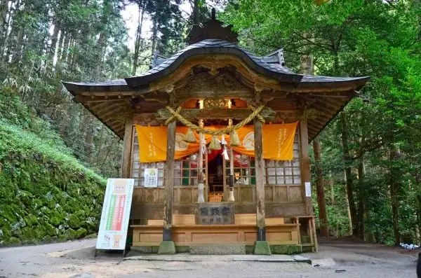
Stay
日野町交流センター リバーサイドひの
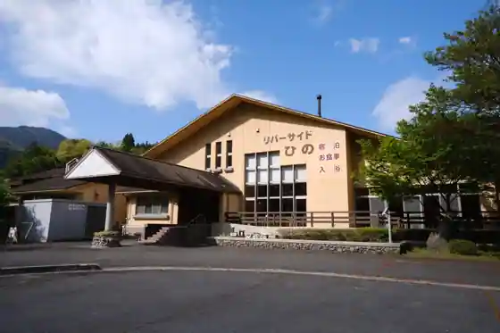
Hino Machi Koryu Center Ribasaido Hino
Inn in Shitaenoki, Hino with a large communal bath.
Dining
味処四季
Ajidokoro Shiki
出雲街道根雨宿二番館 そば道場たたらや
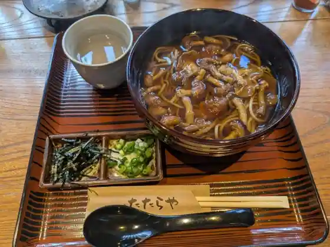
Izumo Kaido Neu Yado Niban Kan Soba Dojo Tataraya
レストランもり
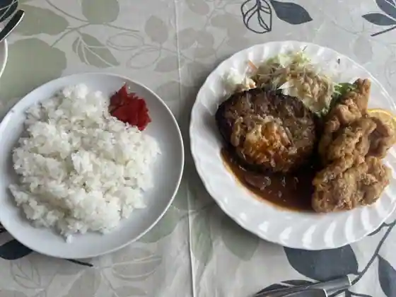
Restaurant Mori
ルートサイド竹の子村
Rutosaido Takenoko Mura
CURRY厨房 舶来亭
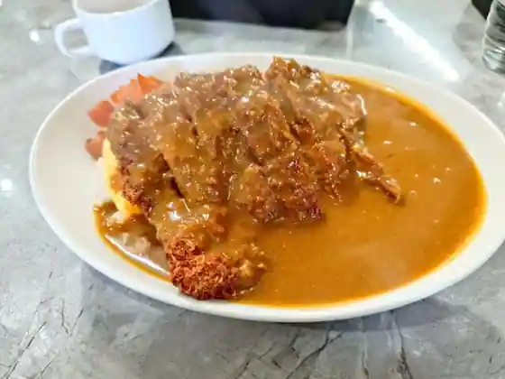
CURRY Chubo Hakurai Tei
ふる里
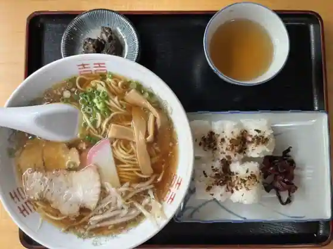
Furu Sato
まめなか屋
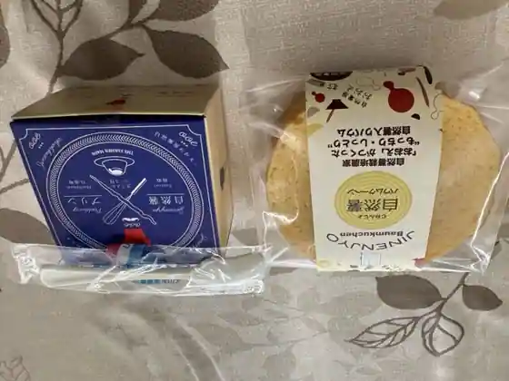
Mamenaka Ya
観光物産館金持神社札所売店
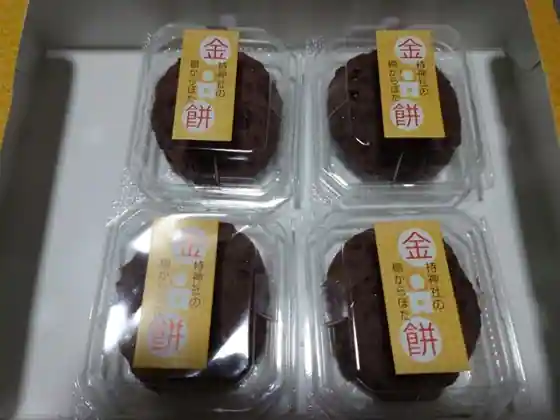
Kanko Bussan Kan Kanemochi Jinja Fudasho Bai
リバーサイドひの
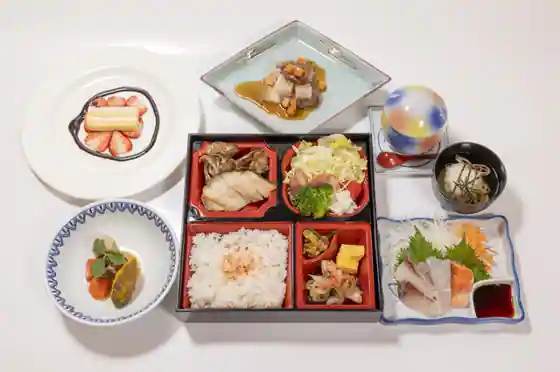
Ribasaido Hino
ひばり食堂
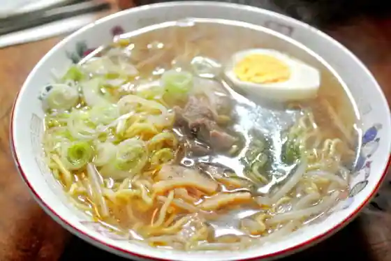
Hibari Shokudo
OIMOYA KAMOCHI
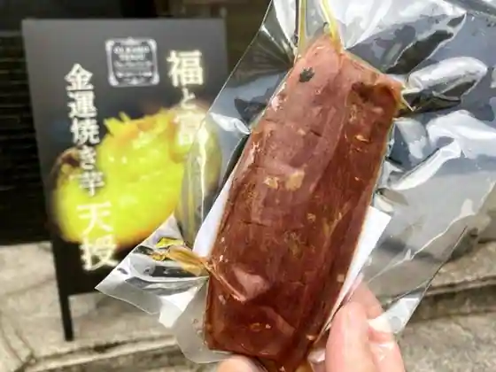
OIMOYA KAMOCHI
お食事処いりえ
O Shokuji Tokoro Irie
日野病院食堂
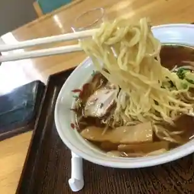
Hino Byoin Shokudo
セルプひの
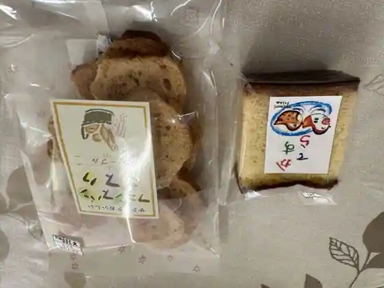
Serupu Hino
うどん屋「どんぐりコロコロ」
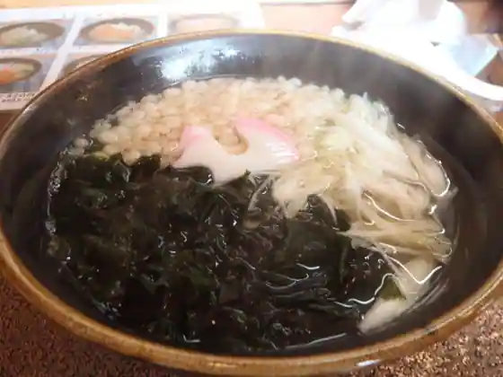
Udon Ya (Donguri Korokoro)
ぺんぎん堂
Pengin Do
割烹森
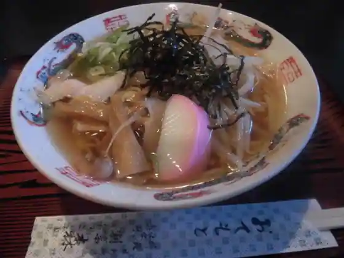
Kappo Mori
まちなかカフェ 根雨宿
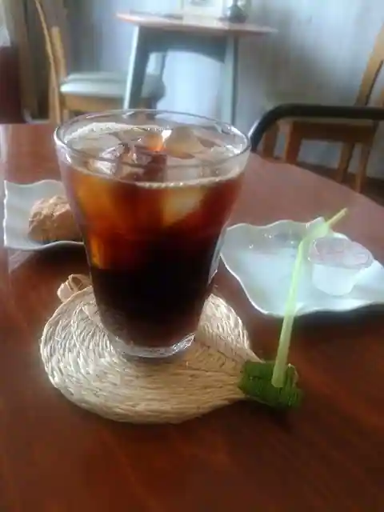
Machinaka Cafe Neu Yado
アルページュ
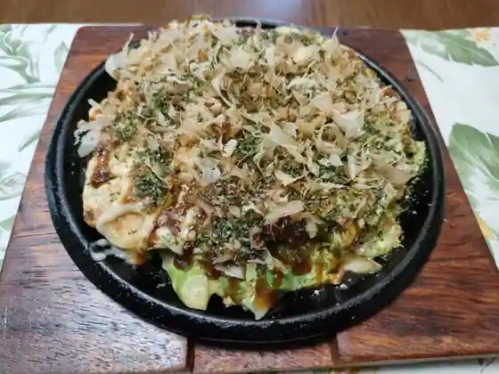
Arupeju
お茶屋おがた
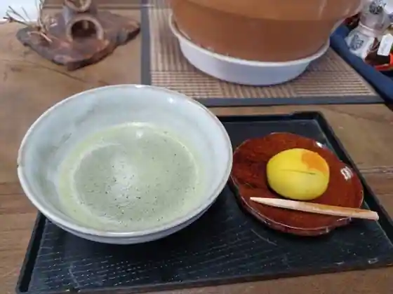
O Chaya Ogata
喫茶マンダリンダック
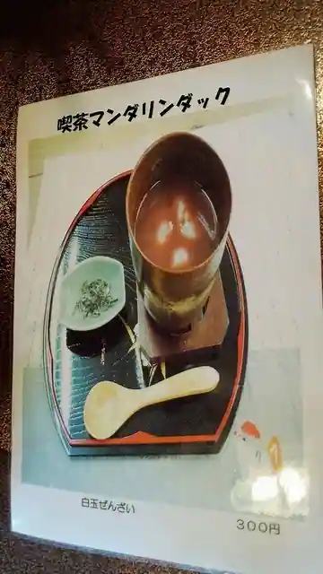
Kissa Mandarindakku
倶楽部ハウス
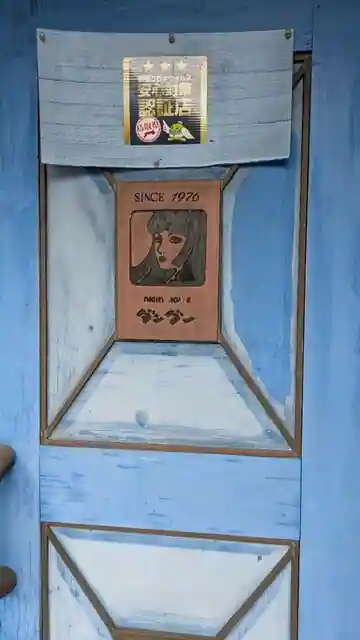
Kurabu House
Sights
Kanemochi Shrine
Neu Yado
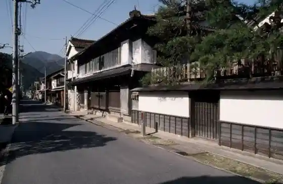
Hino Kawa Kudari Rafuteingu
Oshidori Kansatsu Koya
Akechi Toge
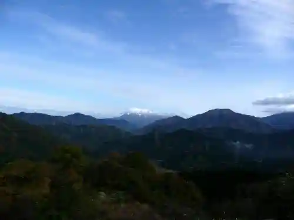
Hino Town Hall